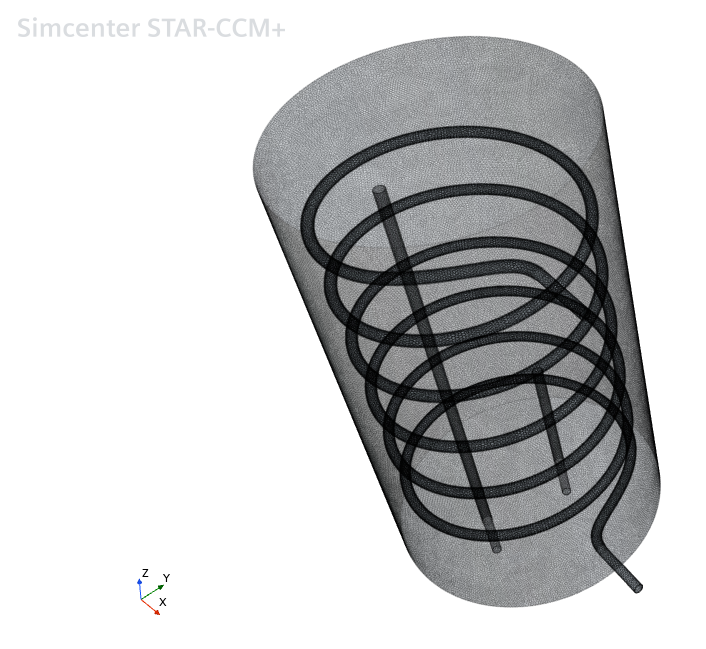
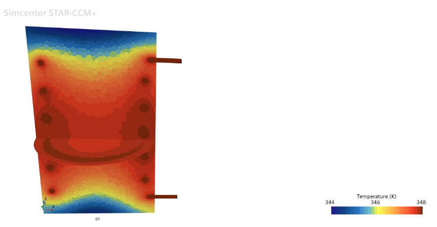
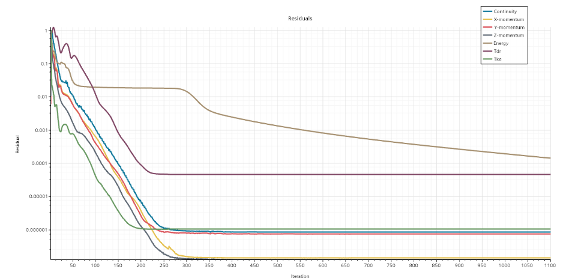

Modelling of hot water tank (80 hrs)
Feb–Jun 2025 · Completed project · Under the supervision of Prof. S. Simonet (LMFL) and P. Carpentier (LISPEN)
Water heater sizing: starting from the technical specifications, I had to design a water heater able to heat 200 liters of water from 293 K to 328 K in 2 hours. The hot water pipe also had to be 1 inch in diameter.
After determining the heat load and the flow rate needed, I used the LMTD method to determine the exchange surface, then the pipe length and its layout inside the heater.

Then I used computer-aided design software (CATIA, from 3DExperience) to design the heater. First, I created two parts: the tank with the Part Design workbench and the hot water pipe with the Generative Shape Design one. Then, I combined the two parts into one to create the water heater.
Finally, I simulated the heater numerically in Star-CCM+ to check that it respected the technical specifications.

First, I imported the 3D model of the water heater into Star-CCM+ and defined its boundaries, in order to set the nature of the moving fluids, their interactions with the walls and the boundary conditions. Next, I defined a mesh to calculate the state of the system at every point. I varied the parameters (base size and surface size in particular) to obtain a fine mesh and relevant results. To visualize these results, I created cross-sectional views of the tank showing the propagation of heat within the fluids. Finally, I assigned the fluid parameters (density, flow rate, initial temperature, etc.) so that the simulation was accurate. As outputs, I chose to follow the temperatures, the energy involved, the flow rates, the heat transfers and the heat capacity. The scalar scene menu also allowed me to follow the temperature at each calculation step at any point of the mesh.

Simulation: zero flow for the cold fluid
- Temperature: the hot water pipe is at the desired temperature (348 K = 75 °C). The heat spreads through the cold water but struggles to become uniform throughout the tank. The cold water stagnating at the top is not realistic, since hot water is lighter than cold water.
- Momentum: the variations are roughly identical in all directions, apart from slight differences around 250 iterations. Given the geometry of the system, these differences look more like an error than a consistent result.
- Turbulence: the Tke (Turbulent Kinetic Energy) decreases with the number of iterations and the residuals of the Tdr (Turbulent Dissipation Rate) tend to be constant. Both show the stability of the model.
- Energy: it decreases and tends toward 0, which is reached when the system is in equilibrium.
- Flow rates: the flow rate of the cold fluid is zero throughout the simulation, while the flow rate of the hot fluid becomes constant after a short transient period.
- Outlet: the cold water is warmer at the outlet than at the inlet. This clearly shows the temperature gradient created by the exchanger, and therefore that it works properly.

Possible continuation
A second model could consider a non-zero cold-water flow, which is the case when the hot water is being used. It would also be wise to modify the boundary parameters near the walls so that there are no longer any areas of cold water at the top of the tank, as observed in this simulation.
Conclusion
Digital tools allowed me to refine the results obtained in the theoretical part by considering various parameters, particularly the geometry of the system, all the heat exchanges and transfers, and the unsteady evolution of the system. Furthermore, in my model, it would be more appropriate to reduce the diameter of the coils to maximize the exchanges between the cold liquid and the hot liquid, which are limited here by the proximity between the coils and the wall.